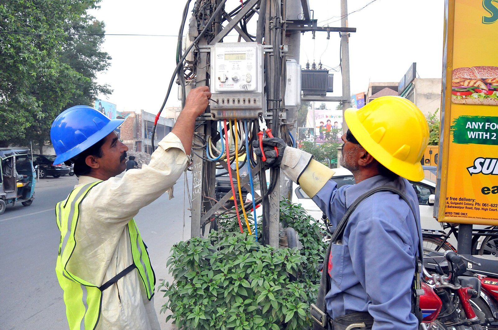

Как сэкономить на коммуналке: 8 работающих способов

Начните с аудита платежей
Прежде чем экономить, разберитесь, за что вы платите. Возьмите квитанцию за последний месяц и посмотрите структуру: отопление, вода, электричество, содержание жилья, капремонт, вывоз мусора. В большинстве регионов львиная доля — отопление и горячая вода. Если в квартире прописано больше людей, чем реально живёт, плата за воду и вывоз мусора считается по нормативам на каждого — это частая переплата. Проверьте, нет ли долгов и начисленных пеней: иногда «экономия» оборачивается штрафами.
Поставьте счётчики и передавайте показания вовремя
Платить по нормативу почти всегда дороже, чем по факту. Счётчики на воду окупаются за несколько месяцев, на электричество — тем более. Главное — передавать показания в срок (обычно до 25-го числа) и следить, чтобы управляющая компания не начисляла «по среднему». Если показания не передавать, через три месяца начнут считать по нормативу с повышающим коэффициентом.
Проверьте право на субсидию и льготы
Если на оплату ЖКУ уходит больше определённой доли дохода семьи (порог в регионах разный, часто 22%), вы имеете право на субсидию. Оформляется через Госуслуги или МФЦ, пересчитывается раз в полгода. Отдельно — льготы для пенсионеров, инвалидов, многодетных, ветеранов. Многие о них просто не знают. Зайдите в личный кабинет на Госуслугах и в раздел соцподдержки своего региона.
Утеплите квартиру и отрегулируйте отопление
До трети тепла уходит через окна, двери и неутеплённые стены. Что реально помогает:
- заменить уплотнители на окнах, установить энергосберегающие стеклопакеты;
- поставить терморегуляторы на радиаторы и не «топить улицу» при проветривании;
- утеплить входную дверь и заделать щели в панельных швах (через УК).
Экономьте воду и электричество без фанатизма
Бытовые привычки дают 10–20% экономии: короткий душ вместо ванны, посудомоечная машина вместо мытья под проточной водой, стирка при 30–40 градусах. По электричеству: светодиодные лампы, выключение техники из розеток, замена старого холодильника. Многотарифный счётчик выгоден, если вы стираете и готовите ночью или заряжаете электромобиль.
Следите за начислениями в квитанции
Ошибки в квитанциях — не редкость: «чужие» квадратные метры, неверные тарифы, начисления за услуги, которых не было. Сверяйте площадь с выпиской ЕГРН, проверяйте тарифы на сайте УК. При обнаружении ошибки пишите заявление на перерасчёт — по закону его обязаны сделать. Общедомовые нужды (ОДН) тоже стоит контролировать: иногда их завышают.
Вывод
Экономия на коммуналке — это не про отказ от тепла и света, а про порядок в платежах: счётчики, субсидии, контроль начислений и разумное потребление. Начните с аудита квитанции и проверки льгот — это даёт самый быстрый эффект без вложений. Дальше — утепление и бытовые привычки, которые окупаются годами.
Ссылки на маркетплейсы и сервисы ведут на проверенные предложения, для вас цена не меняется.
Найти на Маркете →